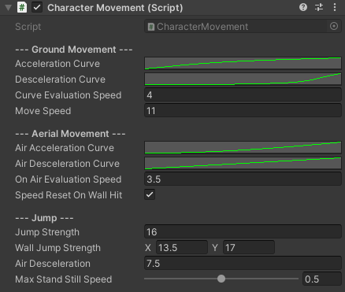

CharacterMovement
SWITCH TO SCRIPTINGOverview
The CharacterMovement script is a versatile component designed to handle character movement within a Unity project.
To utilize the component in your Unity project, proceed by attaching the script to the root object of your character in the
Unity Editor, and then configure the parameters exposed in the Inspector to customize the character's movement behaviour.
Inspector
Ground Movement
| AccelerationCurve | Curve of the character's acceleration. |
| DecelerationCurve |
Curve of the character's desceleration.
It's important to note that the deceleration intensity progresses from 0 to 1 along the vertical axis of the curve and not from 1 to 0 as it may be expected. Ensure that your adjustments reflect this progression, starting from minimal deceleration and increasing to maximum deceleration as needed. |
| CurveEvaluationSpeed | How fast should the acceleration curves be evaluated. |
| MoveSpeed |
Character's top speed. (m/s)
Your character will gradually reach the specified movement speed, influenced by the acceleration curve and the designated evaluation speed of this curve. |
Aerial Movement
| AirAccelerationCurve | Curve of the character's on air acceleration. |
| AirDecelerationCurve |
Curve of the character's on air desceleration.
It's important to note that the deceleration intensity progresses from 0 to 1 along the vertical axis of the curve and not from 1 to 0 as it could be expected. Ensure that your adjustments reflect this progression, starting from minimal deceleration and increasing to maximum deceleration as needed. |
| OnAirEvaluationSpeed | How fast should the 'on-air' acceleration curves be evaluated. |
| SpeedResetOnWallHit | When your character is airborne and collides with a wall, their speed will instantly reset to 0, causing a complete loss of momentum. |
Jump
| JumpStrength | Velocity change of the character, on the Y axis, when a jump is performed. |
| WallJumpStrength | Velocity change of the character, on the X and Y axis, when a jump is performed against the wall. |
| AirDeceleration | How fast should the character lose speed when no input is given, while on air. |
| MaxStandStillSpeed |
The maximum speed the character is allowed to reach, from a stand still jump.
If your character jumps while grounded and then attempts to move while in the air, their aerial speed will not surpass this specified percentage of the character's top speed. |